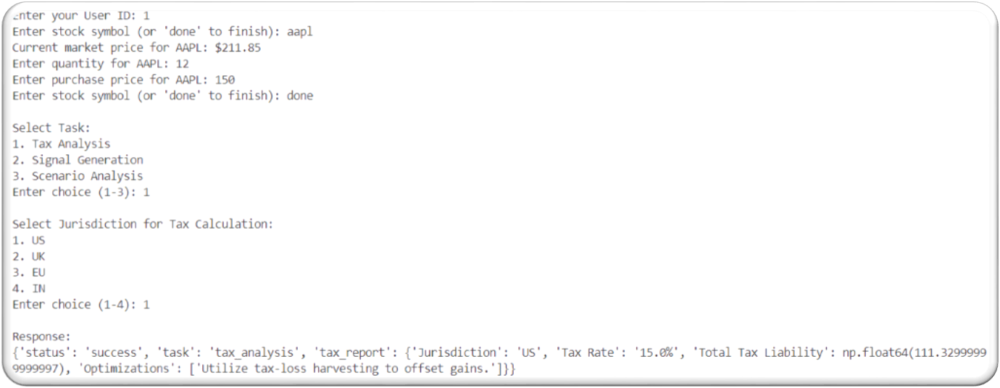
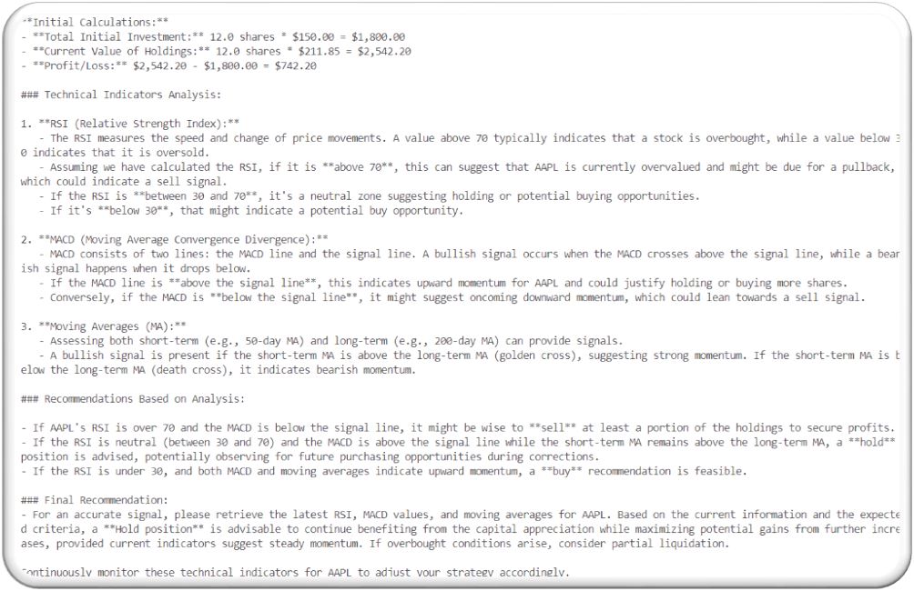
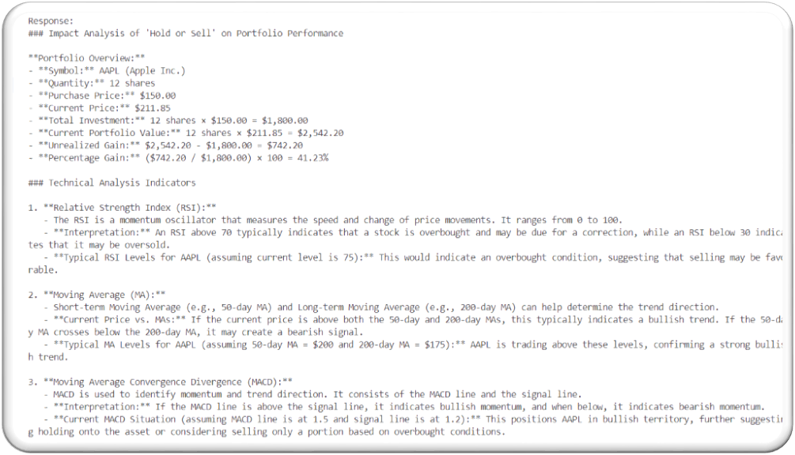
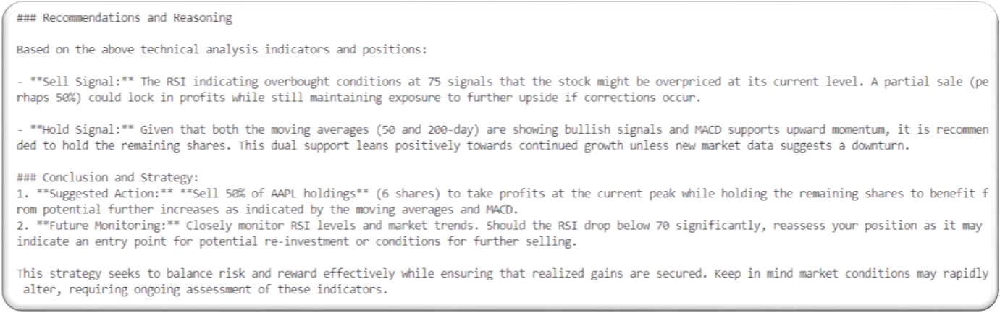

🔍 Project Overview
AI-Agent-Stock-Prediction is an intelligent system that integrates AI agents to assist with stock prediction, tax optimization, backtesting, and compliance, ensuring data security and user experience.
The solution is built using modular agents that collaboratively handle dynamic user inputs, portfolio data, tax logic, visualization, and more.
🚀 Sprint Contributions
| Sprint | Description | User Story & Tasks | Story Points | Time (Est. / Actual) | Key Contributions |
|---|---|---|---|---|---|
| Sprint 1 | Developed Scenario Input Agent |
Story #300 Task #301 |
5 | 30 hrs / 45 hrs |
Initial Agent task1.py Scenario Logic |
| Sprint 2 | Portfolio & Tax Rule Logic |
Task #345 Task #346 |
10 | 44 hrs / 47 hrs |
Portfolio Logic Tax Agent Tax Logic |
| Sprint 3 | Testing, Visualization, Compliance |
Task #348 Task #349 Task #350 Task #351 |
12–15 | 96 hrs / 96 hrs |
Security + Viz Sprint Done |
| Sprint 4 | Exception Handling & Edge Cases | Task #562 | 3 | 16 hrs / 16 hrs | Error Handling |
🖼️ Screenshots of My Work




📌 Final Notes
This repository documents a complete development lifecycle for AI-powered stock analysis, showcasing modular agent implementation, tax optimization, backtesting strategies, dynamic input handling, visualization, and compliance.
Contributions by: Narendra Kumar Akaramsetty | View Commit History